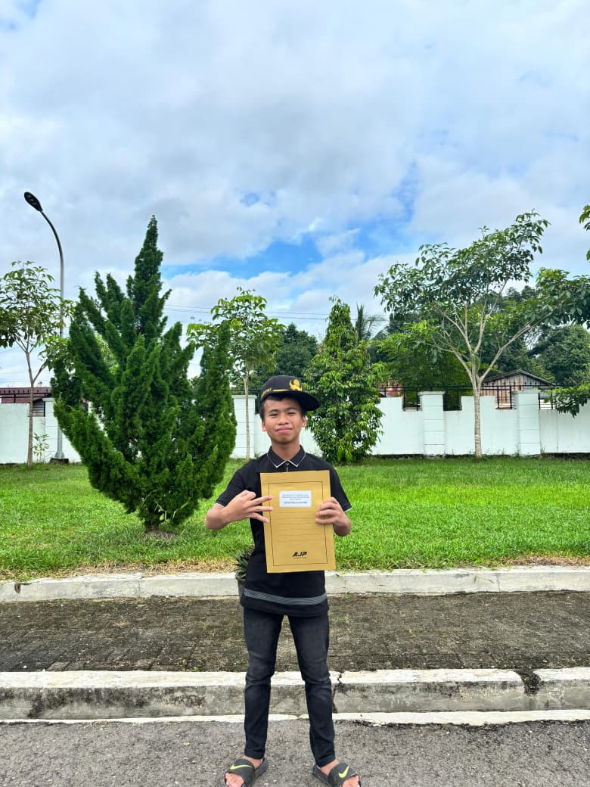

ORGANISASI SHINOBI • PROFIL PERSONAL
SELAMAT DATANG,AHMAD KELVIN NUGRAHA
STATUS // Web Developer|
Di balik awan merah, setiap cerita punya tekad dan setiap tekad meninggalkan jejak. Kenali saya lebih dekat dalam perjalanan ini.
DOSSIER 01 / IDENTITAS
DI BALIK AWAN MERAH
Setiap shinobi memiliki kisah, kemampuan, dan tujuan.

PORTRAIT
Halo, saya Ahmad Kelvin Nugraha.
Nama saya Ahmad Kelvin Nugraha, seorang pelajar kelas X di SMKN 1 Kolaka, jurusan Teknik Jaringan Komputer dan Telekomunikasi (TJKT). Saya tertarik pada dunia teknologi, jaringan komputer, serta bagaimana ilmu baru dapat digunakan untuk menciptakan sesuatu yang bermanfaat.
Di waktu luang, saya senang membaca buku, mencari tahu ilmu baru, dan mendesain poster. Bagi saya, belajar adalah perjalanan tanpa akhir: setiap pengetahuan membuka perspektif baru, sementara setiap desain menjadi kesempatan untuk melatih kreativitas dan menyampaikan ide secara visual.
ARSENAL SKILL
LEVEL KEMAMPUANDOSSIER 02 / ARSIP VISUAL
GALERI SHINOBI
Empat potongan cerita yang tersimpan dalam arsip.
Pilih foto untuk membuka arsip layar penuh. Gunakan tombol panah untuk berpindah.
DOSSIER 03 / JALUR KOMUNIKASI
HUBUNGI SAYA
Punya misi atau ide menarik? Kirim sinyal.
Sebuah kolaborasi bisa menjadi awal dari sesuatu yang luar biasa. Temukan saya melalui jalur berikut.
EMAILahmadkelvin43@gmail.com INSTAGRAM@kv_0153 WHATSAPP+6281217081617 TIKTOK@vinn_trader